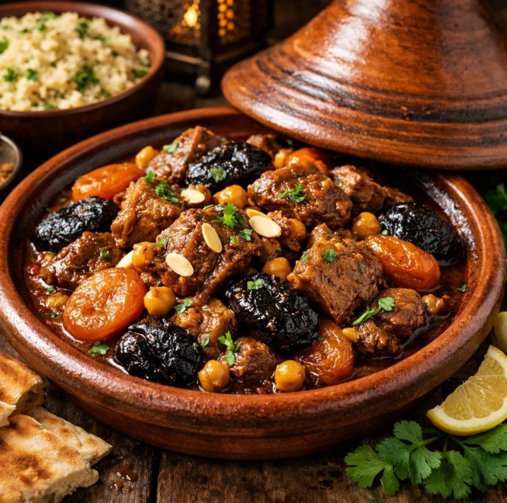

A slow-cooked stew named after the conical clay pot it is cooked in.
Mediterranean and desert traditions meet here: fragrant spice blends, preserved lemons, couscous and dishes cooked in clay.
Slow cooking in a tagine, steaming couscous, tandoor-style baking.

A slow-cooked stew named after the conical clay pot it is cooked in.